Documento institucional de referencia para la operacion comercial y administrativa
de Global Consultores Inmobiliarios y Servicios Integrales. Presenta el uso del
sitio publico, el panel administrativo y el flujo correcto para registrar,
suscribir y publicar propiedades dentro de la plataforma.
AlcanceSitio publico y panel administrativo
Perfil objetivoUsuarios finales, operadores y administradores
EmpresaGlobal Consultores Inmobiliarios y Servicios Integrales
Uso sugeridoCapacitacion, consulta diaria e induccion
El sistema inmobiliario de Global Consultores Inmobiliarios y Servicios Integrales
fue desarrollado para centralizar la gestion comercial, administrativa y operativa
de propiedades en una sola plataforma.
Este manual orienta al usuario final en el uso correcto del sistema, tanto en el sitio
publico como en el panel administrativo, para facilitar la capacitacion y estandarizar
el proceso de trabajo.
El presente documento sirve como apoyo de induccion, consulta operativa y evidencia
funcional del alcance entregado al cliente.
Alcance del documento
El manual cubre acceso al sistema, uso del sitio publico, manejo de propiedades,
agentes, catalogos, suscripciones, pagos, ventas, comisiones, solicitudes,
usuarios, roles y aceptaciones legales.
2. Requisitos de uso
Navegador web actualizado.
Conexion estable a internet.
Credenciales de acceso para usuarios administrativos.
Autorizacion y permisos segun el rol asignado.
Acceso
3. Acceso al sistema
3.1 Sitio publico
Desde el sitio publico el visitante puede:
Consultar la pagina de inicio.
Revisar propiedades publicadas.
Filtrar por tipo de propiedad.
Ver el detalle de una propiedad.
Contactar al equipo comercial.
3.2 Panel administrativo
Ingresar a la opcion Login.
Escribir correo electronico y contrasena.
Presionar Iniciar sesion.
Continuar con cambio de contrasena o aceptacion de terminos si aplica.
Figura 1. Pantalla de inicio de sesion para acceso al panel administrativo.
4. Primer ingreso
En el primer acceso, el usuario puede encontrar dos controles obligatorios:
cambio de contrasena y aceptacion de terminos y condiciones.
Cambio de contrasena: se solicita cuando el sistema obliga a renovar la clave inicial.
Aceptacion de terminos: registra formalmente la conformidad del usuario con las condiciones comerciales y operativas.
Parte 2
5. Sitio publico
El sitio publico esta orientado a clientes y visitantes. Su finalidad es mostrar
las propiedades activas y permitir el contacto directo con la inmobiliaria.
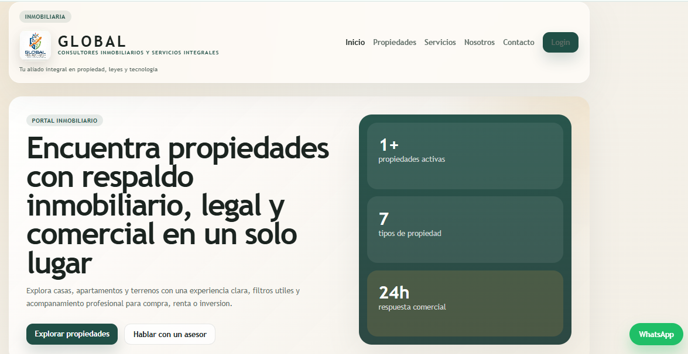
Figura 2. Pagina de inicio del sitio publico con accesos principales.
5.1 Consulta de propiedades
El visitante puede navegar en la seccion de propiedades para:
Ver inmuebles disponibles.
Identificar propiedades destacadas.
Consultar ubicacion, precio y caracteristicas principales.
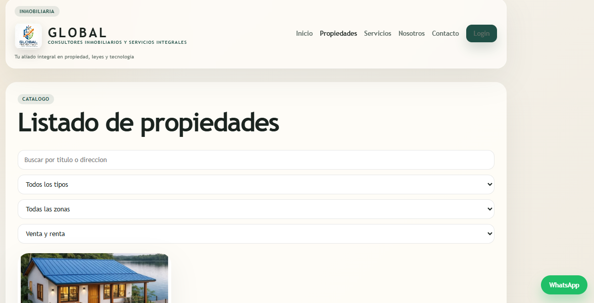
Figura 3. Catalogo publico con filtros por tipo, zona y operacion.
5.2 Detalle de propiedad
Cada propiedad cuenta con una pantalla de detalle donde se muestran:
Galeria de imagenes.
Precio.
Ubicacion.
Habitaciones, banos, area y estacionamientos.
Descripcion.
Datos del agente asignado.
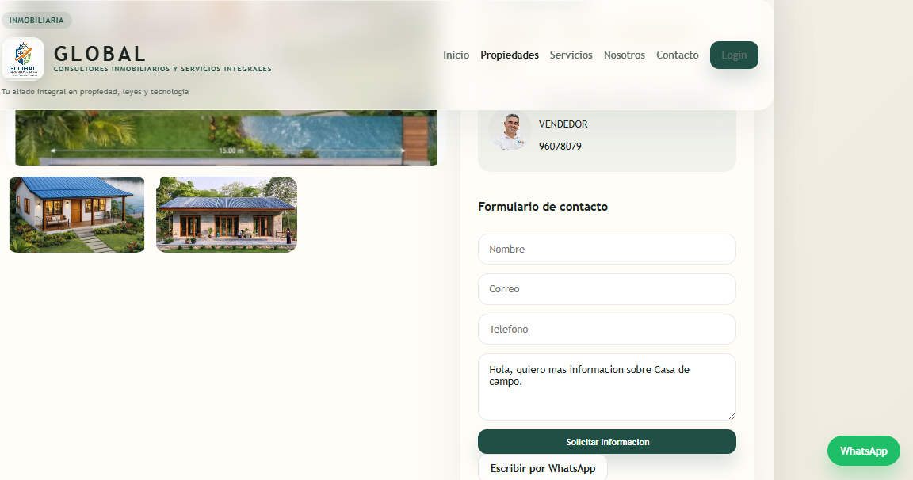
Figura 4. Vista detalle de una propiedad con galeria, agente y formulario.
5.3 Formulario de contacto
El visitante puede enviar una solicitud desde la propiedad o desde la pagina de contacto.
La solicitud queda registrada en el modulo administrativo de solicitudes.
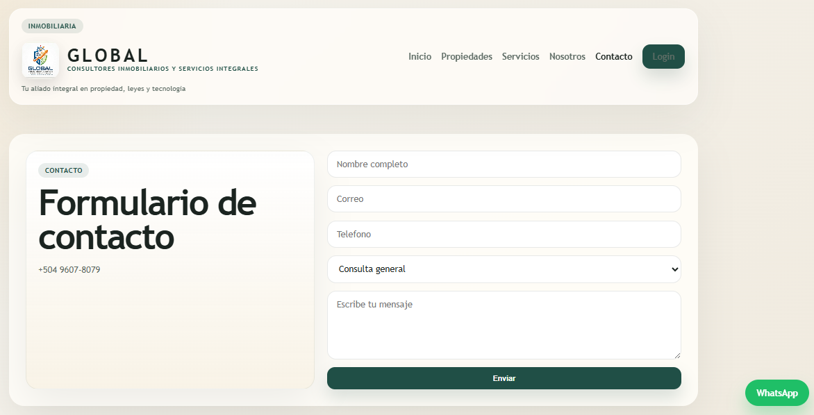
Figura 5. Formulario de contacto general disponible en el sitio publico.
Importante
Una propiedad solo sera visible en el sitio publico si esta activa y con estado de
publicacion Publicada.
Parte 3
6. Panel administrativo
El panel administrativo se organiza en modulos agrupados en el menu lateral:
Dashboard, Operacion comercial, Catalogos y Seguridad.
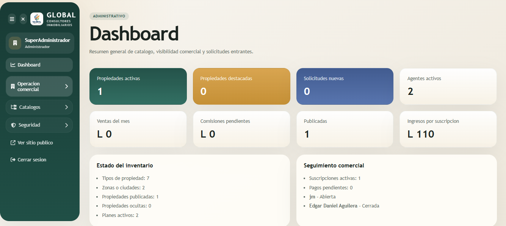
Figura 6. Dashboard con resumen del estado del inventario y seguimiento comercial.
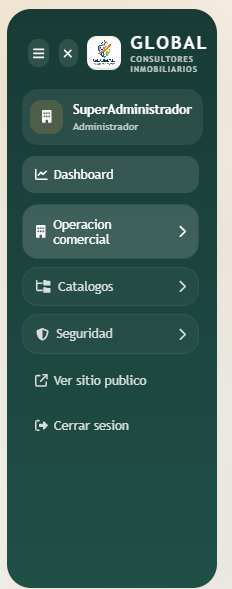
Figura 7. Menu lateral del panel administrativo con secciones agrupadas.
6.1 Dashboard
Presenta un resumen ejecutivo del sistema con indicadores clave, como propiedades activas,
suscripciones, solicitudes, agentes activos, propiedades publicadas e ingresos por suscripcion.
Operacion comercial
7. Modulo de propiedades
Este modulo concentra la administracion principal del catalogo inmobiliario.
Permite crear, editar y actualizar el estado comercial y de publicacion de cada inmueble.
7.1 Datos principales
Titulo.
Operacion: venta o renta.
Tipo de propiedad.
Zona.
Agente.
Precio.
Area.
Caracteristicas fisicas.
Portada y galeria de imagenes.
7.2 Acciones disponibles
Crear nueva propiedad.
Editar propiedad existente.
Activar o desactivar.
Marcar o quitar destacada.
Cerrar venta o cerrar renta.
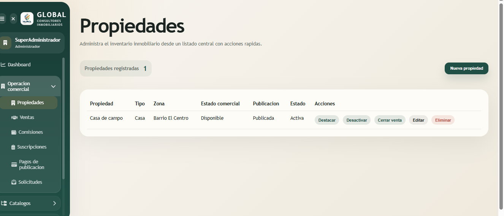
Figura 8. Listado central de propiedades con acciones rapidas por registro.
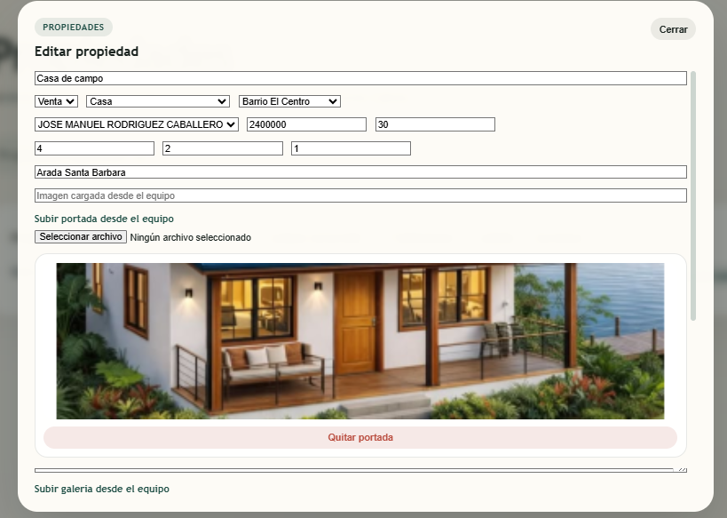
Figura 9. Formulario de edicion de propiedad con carga de portada y galeria.
Proceso clave
8. Como crear y publicar una propiedad
Este es el flujo operativo que el cliente debe comprender con claridad. Registrar la propiedad
no significa que automaticamente aparecera en la web. Para verla publicada se debe completar
el proceso comercial correspondiente.
Paso 1. Crear la propiedad
Entrar al modulo Propiedades.
Presionar Nueva propiedad.
Completar el formulario con titulo, operacion, tipo, zona, agente, precio y direccion.
Subir la imagen de portada desde el equipo.
Subir las imagenes de galeria si se necesitan.
Guardar el registro.
Al terminar este paso, la propiedad queda registrada en el sistema, pero puede seguir en
estado de Borrador o Pendiente de pago, dependiendo de su flujo comercial.
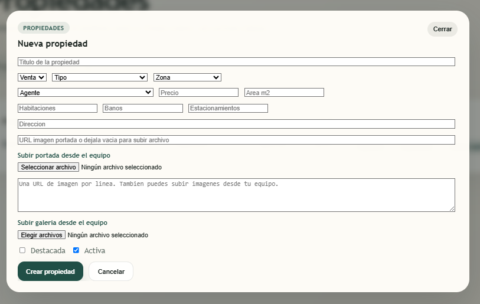
Figura 10. Formulario de nueva propiedad con datos comerciales, portada y galeria.
Paso 2. Revisar la propiedad en el listado
Una vez guardada, la propiedad aparece en la tabla principal del modulo. Desde ese listado
el usuario puede confirmar:
Tipo y zona correctos.
Estado comercial.
Estado de publicacion.
Estado activo o inactivo.
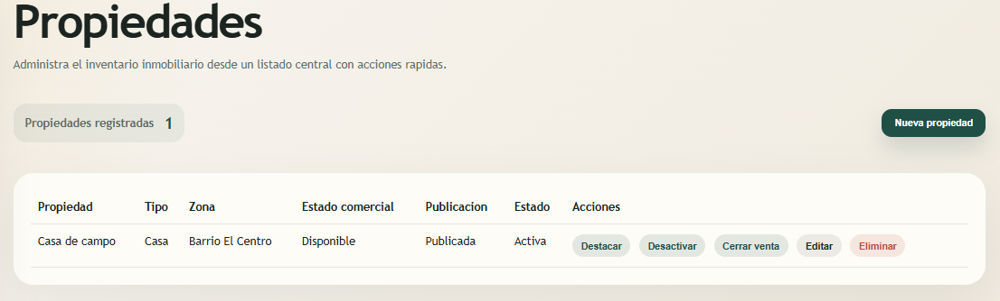
Figura 11. Confirmacion visual de la propiedad en estado activa y publicada.
Paso 3. Crear una suscripcion para la propiedad
Entrar al modulo Suscripciones.
Presionar Nueva suscripcion.
Seleccionar la propiedad.
Seleccionar el plan de publicacion.
Confirmar vigencia, estado y observaciones.
Guardar la suscripcion.
La suscripcion define por cuanto tiempo la propiedad puede mantenerse expuesta y bajo que condiciones.
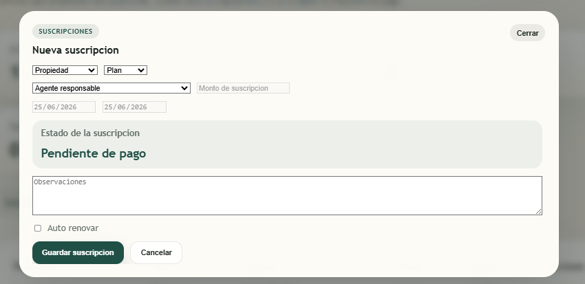
Figura 12. Formulario de suscripcion con propiedad, plan, vigencia y estado comercial.
Paso 4. Registrar el pago de publicacion si aplica
Si el plan requiere pago, se debe registrar en el modulo correspondiente. Este paso es importante
porque una propiedad puede permanecer en Pendiente de pago si el proceso comercial no se completa.
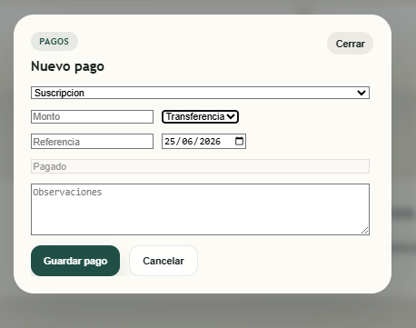
Figura 13. Registro del pago de publicacion con monto, metodo, referencia y fecha.
Paso 5. Confirmar que la propiedad quede publicada
Para que la propiedad aparezca en la web, se debe verificar en el listado de propiedades que cumpla estas condiciones:
Estado del registro: Activa.
Estado de publicacion: Publicada.
Imagen de portada cargada correctamente.
Datos comerciales completos.
Regla practica para el cliente
Si la propiedad ya fue creada pero no se ve en la web, normalmente el problema no esta en el formulario.
Lo primero que se debe revisar es si tiene suscripcion activa, pago procesado y estado de publicacion
Publicada.
Catalogos
9. Modulo de agentes
Permite registrar a los asesores o responsables comerciales vinculados a las propiedades.
Nombre.
Cargo.
Telefono.
Correo.
Foto desde el equipo.
Especialidad.
Estado.
Figura 14. Edicion de agente con fotografia cargada desde el equipo.
Catalogos
10. Catalogos complementarios
10.1 Tipos
Permite mantener categorias como casa, apartamento, terreno u otras definidas por el negocio.
10.2 Zonas
Organiza la cartera por ciudad o sector geografico.
10.3 Imagenes
Ofrece una vista de apoyo para validar el material grafico de las propiedades.
10.4 Planes
Administra las condiciones comerciales de publicacion, incluyendo precio, duracion y prioridad.
Parte 4
11. Suscripciones
Este modulo vincula una propiedad con un plan de publicacion y permite controlar su vigencia.
Propiedad.
Plan asignado.
Precio final.
Fecha de inicio.
Fecha de fin.
Estado.
Auto renovar.
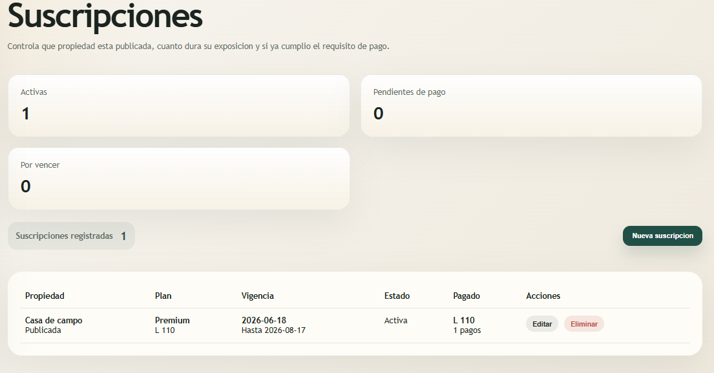
Figura 15. Modulo de suscripciones con indicadores y propiedades suscritas.
Operacion comercial
12. Pagos de publicacion
Se utiliza para registrar los pagos realizados por concepto de publicacion
o suscripcion de inmuebles.
Monto.
Metodo de pago.
Referencia.
Fecha.
Estado del pago.
Figura 16. Modal de nuevo pago para completar el proceso de publicacion de una propiedad.
Operacion comercial
13. Ventas
Permite documentar el cierre comercial de una propiedad, ya sea por venta o renta.
Propiedad.
Agente.
Cliente.
Precio de cierre.
Fecha de cierre.
Observaciones.
Operacion comercial
14. Comisiones
El sistema contempla una comision fija comercial del 5% sobre el valor de cierre,
segun la politica operativa definida.
Este modulo permite revisar:
Porcentaje aplicado.
Monto de comision.
Estado de pago.
Relacion con la venta registrada.
Operacion comercial
15. Solicitudes y contactos
Muestra las solicitudes enviadas desde el sitio publico.
Filtro por estado: abiertas o cerradas.
Orden por fecha.
Paginacion.
Cambio de estado.
Eliminacion segun permisos.
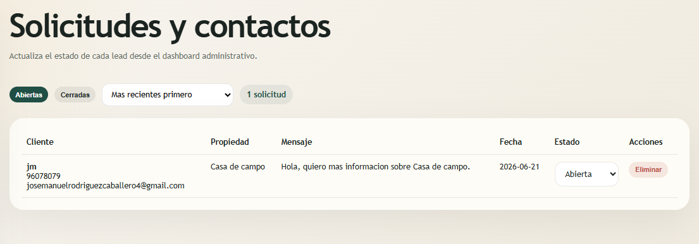
Figura 17. Modulo de solicitudes y contactos con estado, fecha y acciones.
Seguridad
16. Usuarios
El modulo de usuarios permite crear y mantener las cuentas de acceso al sistema.
Nombre completo.
Identificacion.
Correo.
Contrasena.
Rol.
Estado.
Solicitud de aceptacion de terminos al primer ingreso.
Seguridad
17. Roles y permisos
Este modulo define lo que cada perfil puede ver o gestionar dentro del sistema.
Permisos administrados:
VER
CREAR
ELIMINAR
Seguridad
18. Aceptaciones legales
Conserva el historial de aceptacion de terminos y condiciones de primer ingreso.
Busqueda por usuario, correo o codigo.
Visualizacion del texto aceptado.
Impresion del documento.
Descarga en PDF.
Control interno
Este historial queda registrado en la tabla aceptaciones_terminos de la base de datos.
Parte 6
19. Buenas practicas operativas
Verificar precios, estados y ubicaciones antes de publicar.
Asignar correctamente el agente responsable de cada propiedad.
Evitar compartir credenciales entre usuarios.
Cerrar sesion al finalizar la jornada.
Revisar periodicamente solicitudes, suscripciones y pagos.
Aplicar roles y permisos conforme a la responsabilidad de cada usuario.
20. Problemas frecuentes
No puedo ingresar al panel
Verificar correo y contrasena.
Confirmar que el usuario este activo.
Revisar si el sistema solicita cambio de contrasena o aceptacion de terminos.
Una propiedad no aparece en la web
Confirmar que este activa.
Confirmar estado de publicacion Publicada.
Revisar si esta vencida, pausada o pendiente de pago.
No veo una opcion del menu
Es posible que el usuario no tenga permiso VER para ese modulo.
Puede tratarse de una restriccion del rol asignado.
Nota final
Este manual ya incorpora capturas reales del sistema y puede utilizarse como version
formal de entrega. Para presentarlo al cliente, basta con exportarlo a PDF desde el
navegador conservando el formato de impresion.
Global Consultores Inmobiliarios y Servicios Integrales - Manual institucional de usuario final